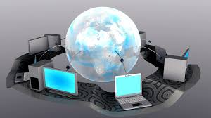

La importancia de la computación radica en que los seres humanos necesitamos acelerar y automatizar los trabajos, procesos y tareas que realizamos, asi como optimizarlos y ademas no solo realizar trabajos sino a su vez llevar un registro de las actividades que se requieren realizar. La mayor parte de lo que conocemos actualmente se realiza por medio de una computadora, su uso se ha generalizado en todos los ámbitos dando paso a la creación de un perfil profesional que domina sistemas de software, informática, algoritmos y más que son parte de este campo de estudio. Aunque podemos pensar que quienes se dedican a esta actividad frente al computador son geeks – personas fascinadas por la tecnología – en realidad su labor aporta al diseño de nuevos enfoques tecnológicos.
